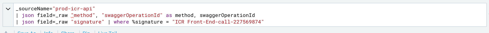

Logs
Good practices and Sumologic
What do we need logging for
- Debugging errors where developers don't have access to
- Monitoring
- Alerting
- Data Science
Good data
- Data must be reliable
- Well formatted
The problems we had
- Log format was inconsistent: plain text and JSON
- Hard to trace related log messages
- Big log objects could be huge (loggly had issues when displaying them)
Problem: Log format was inconsistent Hard to debug errors
- We centralized the function that prints logs
- We normalized them using JSON format
- We can filter by JSON keys now
Problem: Traceability between logs coming from the same request
- We added a trace ID that groups together all related logs
Problem: Traceability between api calls
- We send the trace ID through the headers
Problem: Big log objects could be huge (loggly had issues when displaying them)
What we did
- plain text to JSON
- Traceable ID unique per request
- Controller
- Implemented Sumologic
Sumologic > JSON Queries

Sumologic > Queries

Logs: good practices